CFD & Aerothermal Analysis · Independent Research · Complete
Coupled aerodynamic and thermal analysis of a Dragon-style blunt-body capsule during atmospheric re-entry. CFD surface pressure validated against analytical theory across a Mach sweep, then coupled to a transient thermal protection system model over a representative LEO return trajectory.
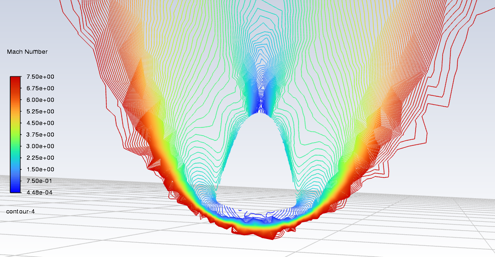
Detached bow shock, Mach 7.5. Mach-number contours on the symmetry plane. Flow decelerates from Mach 7.5 to subsonic across the shock, forming the high-pressure, high-temperature shock layer that drives heat-shield sizing.
Headline Results
Peak wall pressure agrees with Rayleigh Pitot theory to within 0.58–2.81% across three converged Mach cases. Peak Cp matches modified Newtonian to 2.85%.
Fay-Riddell stagnation heating agrees with the Sutton-Graves correlation to 0.3% at Mach 10 — two independent formulations validating the implementation.
Stagnation-point convective heating peaks 106 s after entry interface at 44 km altitude and Mach 20.1, integrating to roughly 62 MJ/m² over the entry.
Mesh independence established at Mach 5 against the 512,000-cell ANSYS Student ceiling; stagnation pressure within 3.1% of isentropic theory.
Transient 1-D conduction sizing holds the bondline below 523 K at 10.8 kg/m² areal mass — the lowest-mass option of three ablators evaluated.
Including a reversed flow direction that would have inverted the entire pressure field, and a silent Boolean subtract that left the domain unmodified.
A re-entering capsule dissipates its orbital kinetic energy into a shock layer that can exceed 10,000 K. Sizing the thermal protection system that survives it requires two things: a trustworthy picture of the pressure field, and a heating history along the actual trajectory.
This project builds both. Phase 1 runs steady density-based CFD over a Mach sweep and validates the result against normal-shock and Newtonian theory rather than assuming the solver is right. Phase 2 takes stagnation heating from the Fay-Riddell correlation — anchored to the CFD-validated range — pushes it along an Allen-Eggers ballistic entry, and drives a transient conduction model to size ablator thickness against a bondline temperature limit.
Dragon-style blunt-body capsule, 3.6 m diameter, in a spherical far-field domain roughly 20 body diameters across.
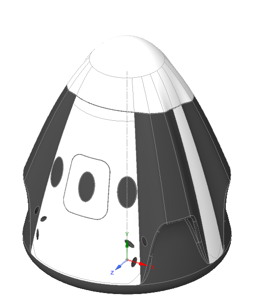
Imported capsule geometry. STEP import into SpaceClaim preserved solid topology. The heat shield faces −Y; freestream flows along +Y.
Combine returned the
target unchanged with no error. It was caught only because the domain volume exactly matched a bare sphere.
The Enclosure tool creates the domain and subtracts the body in one operation regardless of body
position, and resolved it.
479,475 cells, sized deliberately against the 512,000-cell ANSYS Student ceiling.
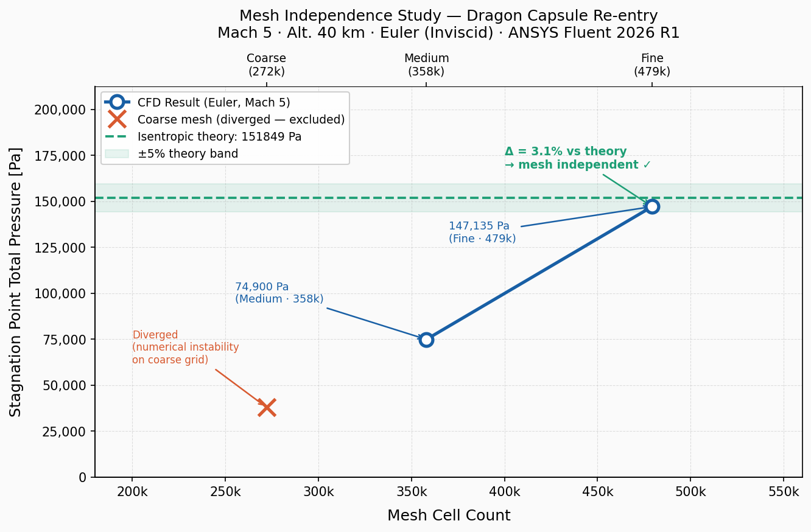
Grid convergence at Mach 5. The coarse 272k grid diverged outright. The medium 358k grid under-predicted stagnation pressure by half. The fine 479k grid lands within 3.1% of isentropic theory (147,135 Pa vs 151,849 Pa) — inside the ±5% band, so the solution is grid independent.
Density-based steady solver with k-ω SST turbulence, ideal gas, and Sutherland viscosity.
Courant number was ramped down as Mach increased — 0.5 at Mach 5, 0.3 at Mach 7.5, 0.2 at Mach 10 — with each case restarted from the previous converged solution. Second-order upwind was attempted and destabilised the solution; first order was retained throughout.
| Case | Alt (km) | Mach | P∞ (Pa) | T∞ (K) | ρ∞ (kg/m³) | V∞ (m/s) | q∞ (Pa) |
|---|---|---|---|---|---|---|---|
| 1 | 40 | 5.0 | 287.14 | 250.35 | 3.996 × 10⁻³ | 1586 | 5025 |
| 2 | 45 | 7.5 | 149.10 | 264.16 | 1.966 × 10⁻³ | 2444 | 5871 |
| 3 | 50 | 10.0 | 79.78 | 270.65 | 1.027 × 10⁻³ | 3298 | 5585 |
| — | 60 | 15.0 | 21.96 | 247.02 | 3.097 × 10⁻⁴ | 4726 | 3459 |
| — | 70 | 20.0 | 5.221 | 219.59 | 8.283 × 10⁻⁵ | 5941 | 1462 |
| — | 75 | 25.0 | 2.388 | 208.40 | 3.992 × 10⁻⁵ | 7235 | 1045 |
Cases 1–3 were run in CFD. Mach 15–25 are covered analytically — see limitations.
Three independent checks: peak wall static pressure against Rayleigh Pitot, peak pressure coefficient against modified Newtonian, and freestream total pressure against isentropic theory.
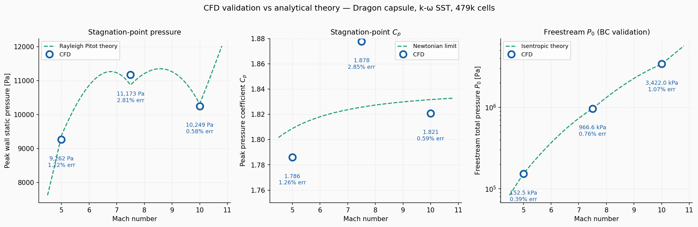
All three checks pass across the Mach sweep. CFD points sit on the analytical curves at every Mach number, with maximum error 2.85%.
| Mach | CFD (Pa) | Theory (Pa) | Error |
|---|---|---|---|
| 5.0 | 9,262.0 | 9,376.1 | 1.22 % |
| 7.5 | 11,172.6 | 10,867.5 | 2.81 % |
| 10.0 | 10,248.8 | 10,308.9 | 0.58 % |
| Mach | CFD Cp | Theory Cp | Error |
|---|---|---|---|
| 5.0 | 1.786 | 1.809 | 1.26 % |
| 7.5 | 1.878 | 1.826 | 2.85 % |
| 10.0 | 1.821 | 1.832 | 0.59 % |
| Mach | CFD (Pa) | Theory (Pa) | Error |
|---|---|---|---|
| 5.0 | 152,514 | 151,923 | 0.39 % |
| 7.5 | 966,595 | 959,299 | 0.76 % |
| 10.0 | 3,421,984 | 3,385,802 | 1.07 % |
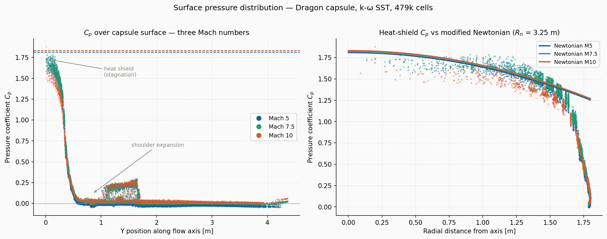
Cp is nearly Mach-independent on the heat shield. Theory predicts 1.809 at Mach 5 and 1.832 at Mach 10 — under 2% apart across a doubling of speed — and the CFD reproduces that collapse. The sharp drop near Y ≈ 0.4 m is the shoulder expansion, where flow accelerates around the heat-shield edge and pressure falls to freestream.
The Mach 7.5 Cp exceeds its own theoretical bound. At 1.878 it sits above the Newtonian limit of 1.826, which is not physically possible for a steady stagnation point. The cause is a single-facet pressure spike from shock smearing on a coarse grid — a numerical artifact of taking a facet maximum, not a real overshoot. Area-weighted averaging is the appropriate cross-check.
Total pressure loss across the bow shock is severe. At Mach 5, freestream P₀ of 152,514 Pa arrives at the wall as 9,262 Pa — a 93.9% loss, consistent with strong normal-shock behaviour and a useful sanity check on the shock capture.
Boundary conditions are validated separately from the solution. Checking freestream P₀ against isentropic theory confirms the inlet is delivering the conditions intended, which is a different question from whether the flow field is right.
Shock structure and surface pressure distribution from the converged solutions.
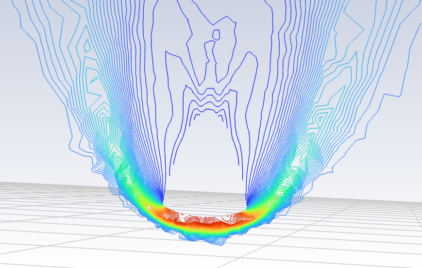
Bow shock standoff. Static pressure contours resolve the detached shock sitting ahead of the heat shield, with the highest pressure concentrated along the stagnation region.
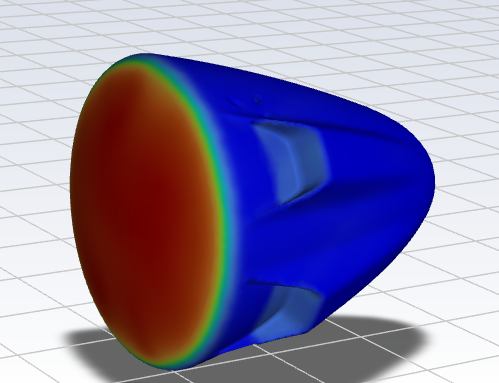
Orientation verification. Peak wall pressure lands squarely on the heat shield, not the nose — the check that caught the reversed flow-direction error.
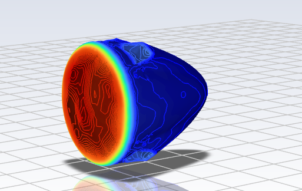
Banded surface contours. Pressure falls monotonically from the stagnation point outward, collapsing sharply at the shoulder.
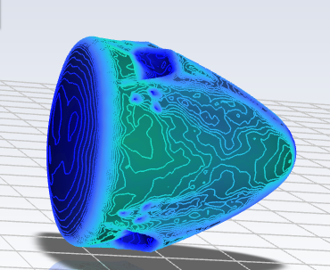
Leeside. The aft body sits in the wake at near-freestream pressure — two to three orders of magnitude below the stagnation region.
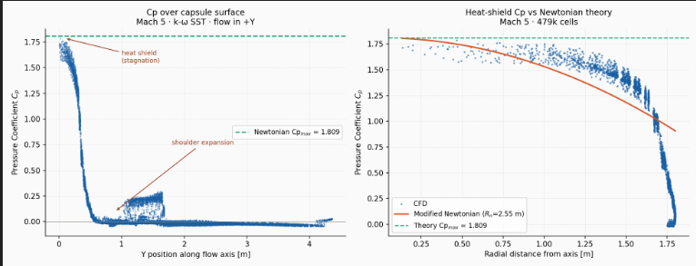
Native Fluent Cp export, Mach 5. Stagnation plateau, shoulder expansion, and the Newtonian bound overlaid.
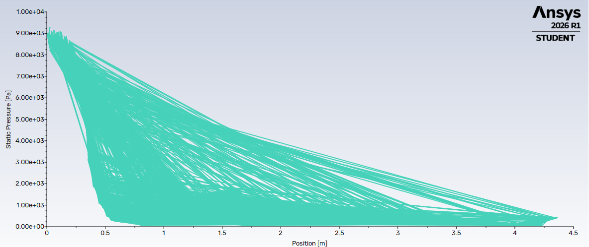
Static pressure along the flow axis. Every surface facet plotted — the spread reflects circumferential variation over the full 3-D body.
What converged, what did not, and what the residual histories show.
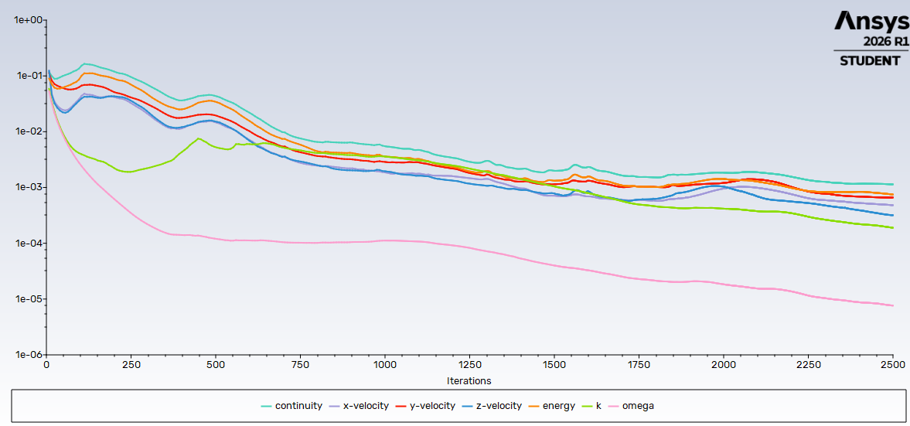
Mach 5 — converged. All residuals fall steadily to the 10⁻³–10⁻⁴ range over 2,500 iterations at Courant 0.5.
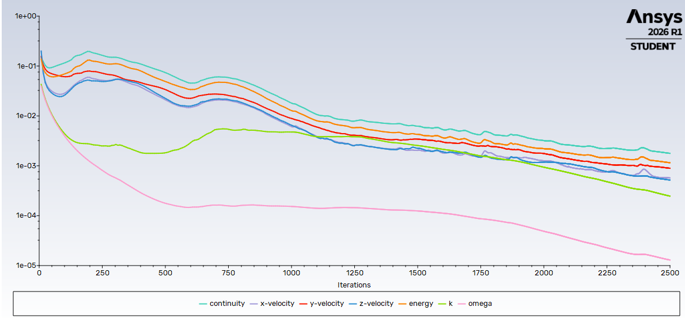
Mach 7.5 — cleanest of the three. Near-monotonic decay with no stalling, the best-behaved case in the sweep.
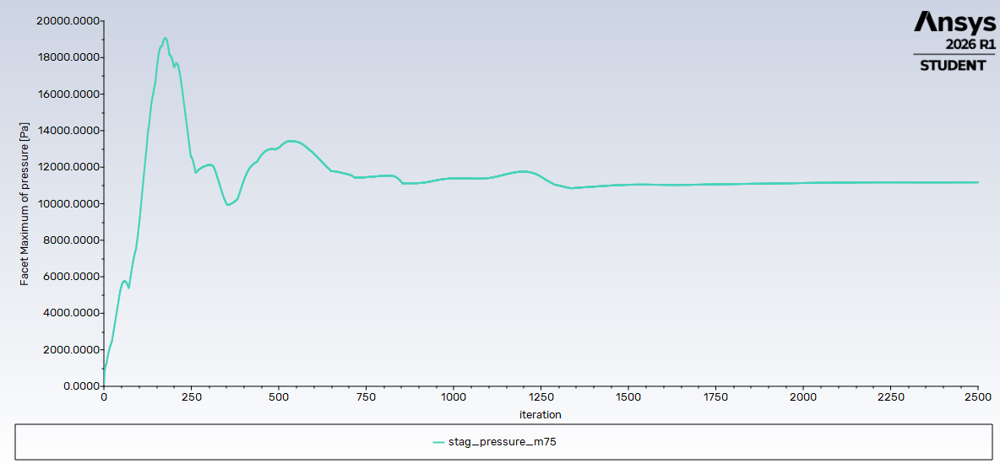
Mach 7.5 stagnation monitor. Overshoots to 19 kPa during startup transients, then settles flat at 11,150 Pa from iteration 1,400 — a physical quantity converging, not just residuals.
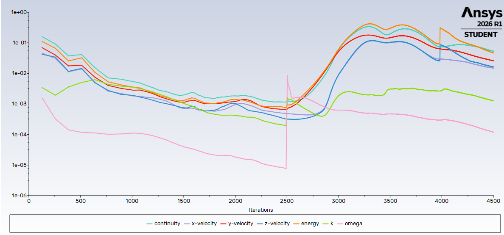
Mach 10 — ramped, disturbed, recovered. Boundary conditions were stepped up at iteration 2,500 from the converged Mach 7.5 solution. Residuals spike two orders of magnitude, then recover through 4,500 iterations.
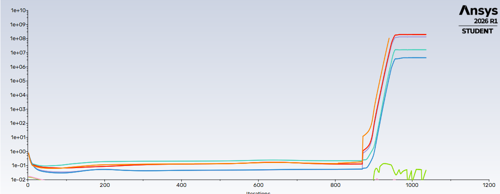
Attempt 1 — cold start, Courant 0.25. Residuals idle near 10⁻¹ for 750 iterations, then blow up to 10⁺⁸ at iteration 860.
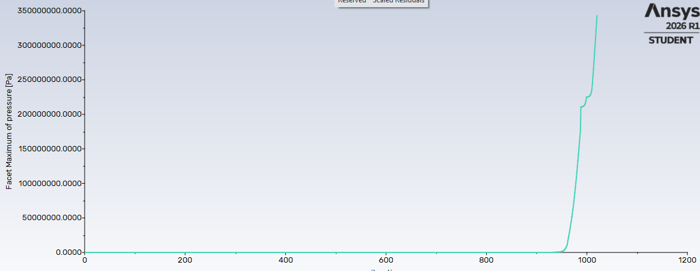
Attempt 1 stagnation monitor. Pressure runs away to 350 MPa against a theoretical 6.4 kPa — unambiguously divergence, not a marginal solution.
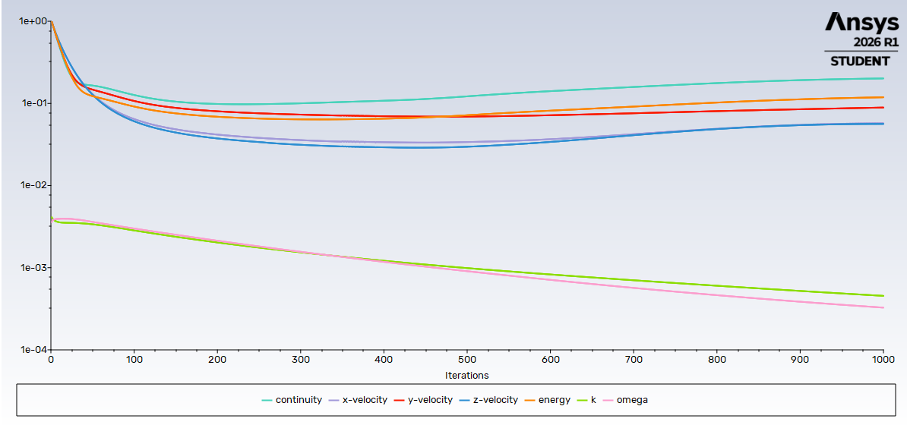
Attempt 2 — Courant 0.05. No blowup, but residuals bottom out around iteration 350 and climb thereafter. Stable is not the same as converged.
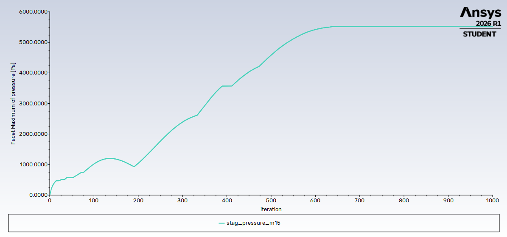
Attempt 2 stagnation monitor. Settles at 5,510 Pa against 6,399 Pa theory — 14% low. Flat, but wrong, so it was not reported as a result.
Fay-Riddell convective heating across Mach 5–25, cross-checked against Sutton-Graves.
Implemented per Fay & Riddell (1958) for an equilibrium boundary layer, using the CFD-fitted nose radius Rn = 3.248 m, a 300 K wall, and Sutherland viscosity:
| Mach | Alt (km) | V (m/s) | T₀ (K) | Fay-Riddell | Sutton-Graves | Δ |
|---|---|---|---|---|---|---|
| 5.0 | 40 | 1,586 | 1,502 | 2.15 W/cm² | 2.44 W/cm² | 11.8 % |
| 7.5 | 45 | 2,444 | 3,236 | 5.98 | 6.25 | 4.3 % |
| 10.0 | 50 | 3,298 | 5,684 | 11.07 | 11.11 | 0.3 % |
| 15.0 | 60 | 4,726 | 11,363 | 18.61 | 17.95 | 3.7 % |
| 20.0 | 70 | 5,941 | 17,787 | 19.59 | 18.44 | 6.2 % |
| 25.0 | 75 | 7,235 | 26,258 | 25.09 | 23.12 | 8.5 % |
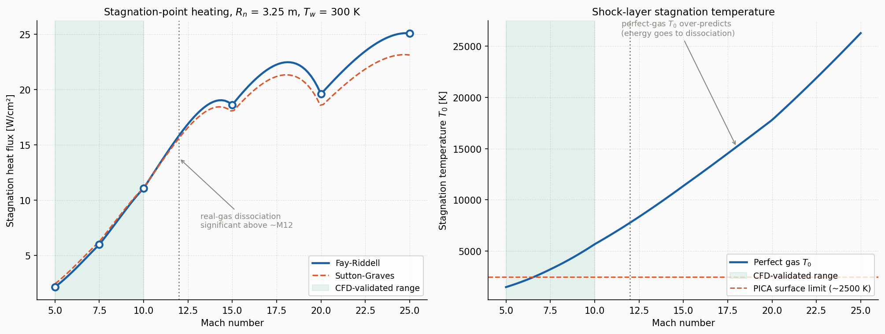
Heating and shock-layer temperature, Mach 5–25. The shaded band marks the CFD-validated range. Two independent correlations agreeing to 0.3% at Mach 10 is what validates the implementation — a single correlation agreeing with itself would prove nothing.
Allen-Eggers ballistic entry through an exponential atmosphere, giving a continuous heat-flux history rather than discrete Mach points.
1-D transient conduction, implicit backward Euler, 120 nodes — thickness sized to hold the bondline below 523 K.
The front face receives net flux qconv − εσ(T⁴ − T∞⁴), with surface temperature
capped at the material ablation temperature and excess flux booked as absorbed by ablation. The back
face is adiabatic — conservative, since it allows no heat rejection into the structure.
| Material | ρ (kg/m³) | k (W/m·K) | cp (J/kg·K) | Tabl (K) | ε |
|---|---|---|---|---|---|
| PICA | 270 | 0.35 | 1,590 | 2,900 | 0.90 |
| Avcoat | 512 | 0.35 | 1,465 | 2,200 | 0.85 |
| Generic ablator | 264 | 0.213 | 1,255 | 1,700 | 0.85 |
| Material | Thickness | Peak surface T | Peak bondline T | Areal mass | Integrated load |
|---|---|---|---|---|---|
| PICA | 4.0 cm | 2,203 K | 458 K | 10.8 kg/m² | 61.6 MJ/m² |
| Avcoat | 3.0 cm | 2,200 K | 462 K | 15.4 kg/m² | 61.5 MJ/m² |
| Generic ablator | 3.5 cm | 1,700 K | 455 K | 9.2 kg/m² | 63.0 MJ/m² |
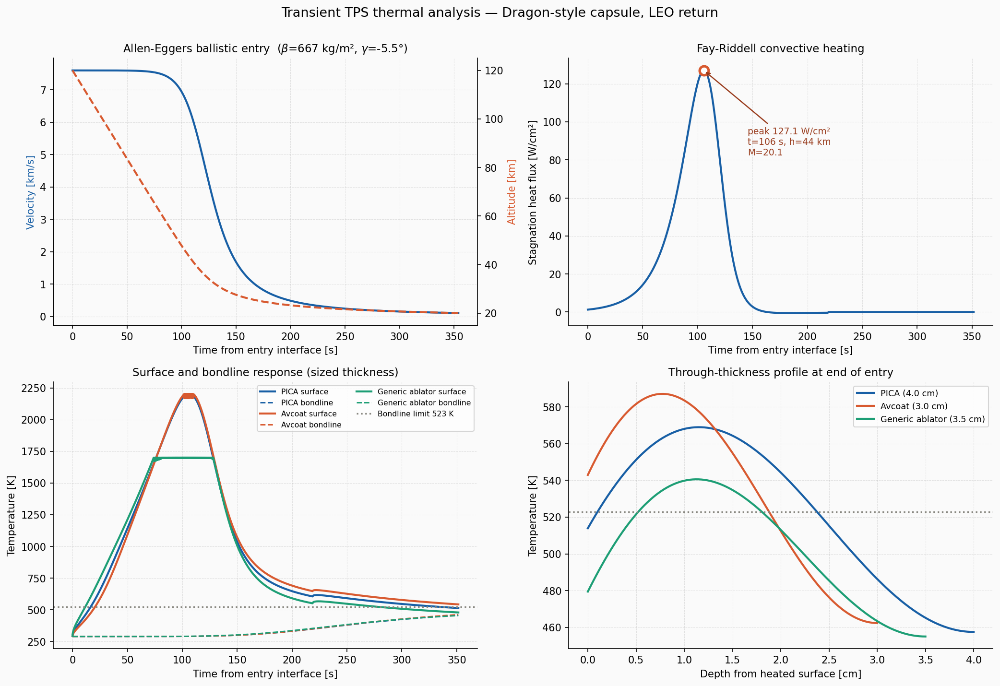
Full transient TPS response. Left to right, top to bottom — Allen-Eggers velocity and altitude history; Fay-Riddell heat flux peaking at 127.1 W/cm² at t = 106 s, 44 km, Mach 20.1; surface and bondline temperature response at sized thickness; and the through-thickness temperature profile at end of entry.
Avcoat sizes thinner than PICA — 3.0 cm against 4.0 cm — because its lower ablation temperature caps surface temperature sooner, reducing the gradient that drives heat inward. But at 512 kg/m³ it is nearly twice as dense, so it still carries a 43% areal-mass penalty. That trade is precisely why low-density ablators displaced Avcoat-class materials on modern vehicles.
The generic silicone ablator shows the lowest areal mass of the three, but its 1,700 K ablation limit means it would recede fastest in service. Since the model does not track surface recession, that comparison understates its true thickness requirement.
Six defects caught during the build. Most were silent — they produced plausible-looking output rather than an error message.
| # | Issue | How it was detected | Resolution |
|---|---|---|---|
| 1 | Vehicle flying nose-first instead of heat-shield-first | Compared expected stagnation location against geometry | Flow direction set to (0, 1, 0) |
| 2 | Reference values left at solver defaults (ρ = 1.225, V = 1) | Exported Cp read 77–15,121 against a physical max of ≈ 1.8 | Compute-from set to far-field zone; earlier data rescaled analytically |
| 3 | Boolean subtract silently returned a no-op | Domain volume exactly matched a bare sphere | Switched to the Enclosure tool |
| 4 | Capsule retained as a solid cell zone | Cell Zone Conditions listed fluid + solid, shadow walls, contact interfaces | Suppressed the capsule body for physics |
| 5 | Node-based rather than cell-based Cp export | Mach 10 peak Cp read 1.611 against 1.821 from the facet maximum | Specified cell-centred export |
| 6 | Mesh exceeded the Student cell cap | 949,913 cells at 4 m element size | Element size tuned to 6.5 m → 479,475 cells |
Stated in full, because results are only usable if their boundaries are known.
Inflation generated inverted cells across multiple attempts; the root cause is complex imported surface topology. The near-wall boundary layer is therefore unresolved and CFD wall heat flux is not used anywhere in this work. Surface pressure, driven by the inviscid outer flow, remains valid.
Two attempts, both documented in section 06. Shock thickness scales inversely with Mach, so a shock marginally resolved at Mach 5 is under-resolved at Mach 15. The 512k cell cap prevents the refinement that would fix it. Mach 15–25 are covered analytically.
γ = 1.4 throughout. Above roughly Mach 12, O₂ and N₂ dissociation becomes significant and effective γ falls well below 1.4. Perfect-gas theory predicts T₀ = 26,258 K at Mach 25; real shock-layer temperature would be nearer 8,000–10,000 K. This is why CFD above Mach 12 was not attempted.
Second-order upwind destabilised the solution with a residual spike at iteration 3,000 on the Mach 5 case. First order was retained, at the cost of additional numerical diffusion and a slightly smeared shock.
Ablation is modelled as a temperature cap with energy bookkeeping, not a mass-loss-coupled model. No surface recession is tracked. Properties are constant — no temperature dependence, pyrolysis, or char-layer formation.
Heating is evaluated at the stagnation point; the remainder of the heat shield sees lower flux. Radiative heating is omitted — defensible at 7.6 km/s, though not negligible. No design margins are applied.
ANSYS SpaceClaim for geometry and domain, ANSYS Meshing for the grid, ANSYS Fluent 2026 R1 density-based solver for three converged Mach cases.
Python 3 implementations of Fay-Riddell and Sutton-Graves heating, Allen-Eggers trajectory integration, and an implicit 1-D transient conduction solver.
Rayleigh Pitot, modified Newtonian, and isentropic theory as independent checks, plus a grid convergence study and a correlation cross-check.
Complete project documentation — solver setup, every result table, the debugging log, and all limitations — plus the Python source for the heating, trajectory, and TPS conduction models.
Read the Technical Report → GitHub